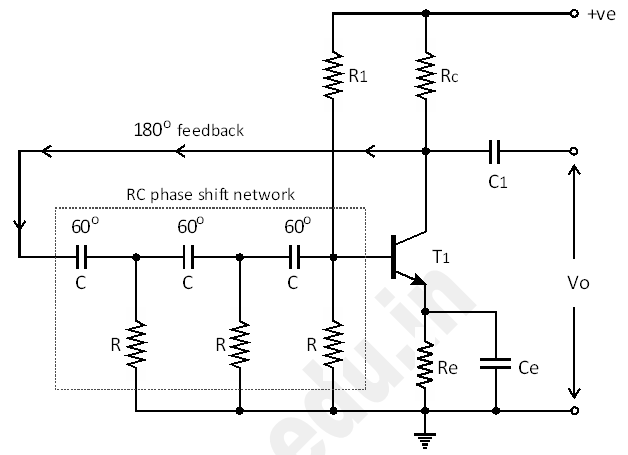
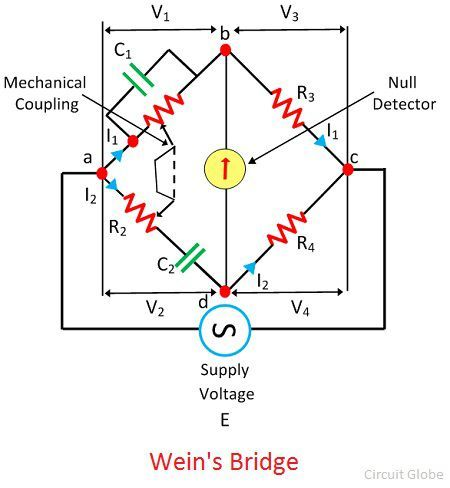
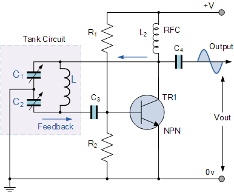
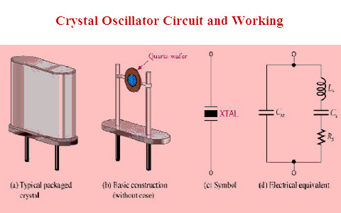
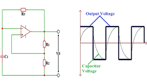

🔁 Oscillators & Signal Generators
Oscillators are electronic circuits that produce a periodic waveform without requiring an input. Signal generators are circuits that output various waveforms (sinusoidal, square, triangular) for testing and modulation purposes.
📘 1. Types of Oscillators
- RC Oscillators: Use resistors and capacitors (e.g. Phase Shift, Wien Bridge)
- LC Oscillators: Use inductor-capacitor tanks (e.g. Colpitts, Hartley)
- Crystal Oscillators: Use quartz crystals for ultra-stable frequency
- Relaxation Oscillators: Use devices like UJTs or Schmitt triggers for non-sinusoidal waveforms
📐 2. RC Oscillator: Phase Shift
This oscillator uses three RC stages to introduce a 180° phase shift and an inverting op-amp to complete the loop.

Each RC section contributes 60° phase shift; total 180° needed for sustained oscillation.
🔔 3. Wien Bridge Oscillator
- Produces low-distortion sine waves
- Uses op-amp + RC bridge network
- Popular for audio frequency generation

🔊 4. LC Oscillator: Colpitts
- High-frequency oscillator using split-capacitor configuration
- Common in RF transmitters and tuners

🧪 5. Crystal Oscillator
- Extremely stable frequency (±50 ppm)
- Used in watches, clocks, microcontrollers

🌀 6. Relaxation Oscillator
Uses the charging and discharging behavior of capacitors — often built using op-amps or UJTs.

🎞️ Animation: Oscillator Output Waveforms
Above: Simulated sinusoidal waveform from a Wien bridge oscillator.
📘 Example Calculation
Wien Bridge Oscillator Frequency:
f = 1 / (2πRC)
For R = 10kΩ and C = 0.01μF → f ≈ 1.59 kHz
🧠 Quiz
What determines the frequency in a Colpitts oscillator?
Answer: The values of the inductance (L) and the capacitive divider (C1, C2).
Which oscillator is best for audio generation?
Answer: Wien Bridge
What is the role of the quartz crystal in a crystal oscillator?
Answer: To stabilize the frequency by acting as a mechanical resonator.